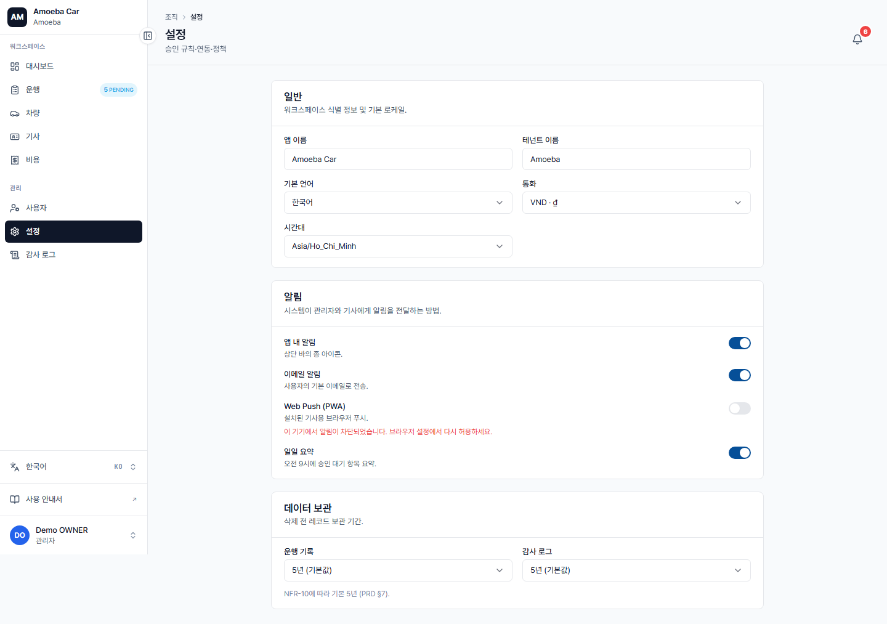

시스템 설정 (Settings)
- URL
/settings- 대상
- 관리자만 수정 가능. 매니저는 읽기 전용으로 조회.
- 저장
- 자동 저장 (auto-save) — 저장 버튼 없음

카드 1 — 일반 (General)
| 항목 | 설명 | 기본값 |
|---|---|---|
| 앱 이름 | 사이드바에 표시되는 이름 (예: "Amoeba Car") | "Fleet" (i18n) |
| 조직명 | 브랜드 하단에 표시되는 회사명 | AMA에서 가져옴 |
| 통화 | VND / KRW / USD | VND |
| 시간대 | Asia/Ho_Chi_Minh / Asia/Seoul | Asia/Ho_Chi_Minh |
카드 2 — 알림 (Notifications)
조직 전체 알림 채널 켜기/끄기:
- In-app — 알림함 /inbox
- 이메일 — 등록된 이메일로 발송
- Daily Digest — 일일 요약 이메일
⚠️
In-app 끄기를 설정하면 모든 사용자가 앱 내 알림을 받지 못합니다. 명확한 이유가 있을 때만 비활성화하세요 (예: 점검 기간 중 스팸 방지).
카드 3 — 데이터 보관 (Data Retention)
| 항목 | 옵션 | 기본값 |
|---|---|---|
| 운행 기록 보관 | 1 / 3 / 5 / 7년 | 5년 |
| 감사 로그 보관 | 3 / 5년 / 무기한 | 5년 |
운행 기록과 감사 로그에 대해 조직이 정하는 보관 정책입니다 (규정 준수를 위해 기본 5년).
💾
값을 변경하는 즉시 자동으로 저장됩니다. "저장" 버튼을 누를 필요가 없습니다. 저장 확인을 위해 잠시 "✓ 저장됨" 토스트가 표시됩니다.